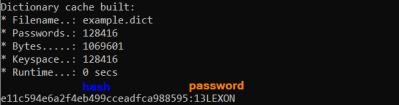

dictionary attack
Hashcat will use a wordlist and based on the hashtype used each word from the list will be hashed with the specific method and if it match the original hash, means that the original password is been found.
Hashcat nice feature lets you specify multiple dictionary files, one right after the other, at the command line
example:hashcat64.exe -m 0 -a 0 -D 1 example0.hash example.dict
•
-m 0 designates the type of hash we are cracking (MD5)
•
-a 0 designates a dictionary attack
•
-D 1 device we want to use
•
example0.hash is the input file with a list of hashes that we want to crack
•
example.dict is the wordlist file for this dictionary attack.
Like we see in the results only a hash is been cracked
